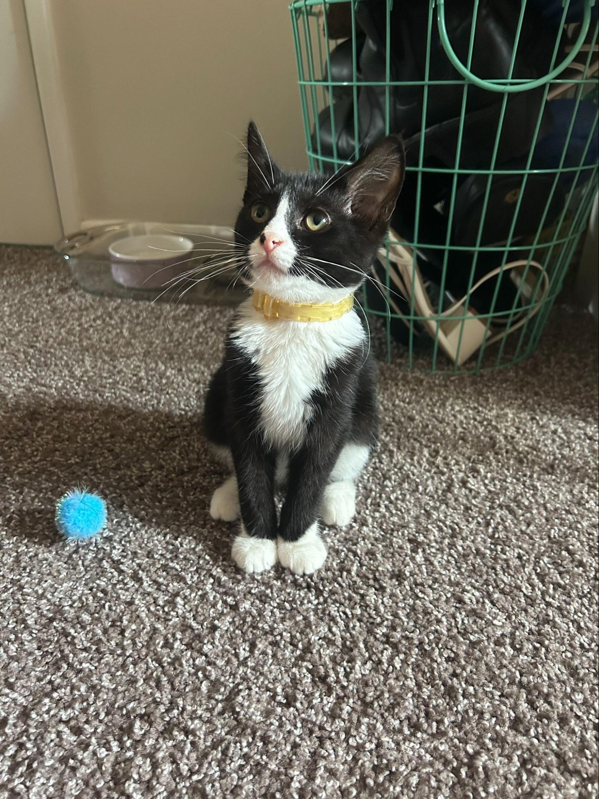
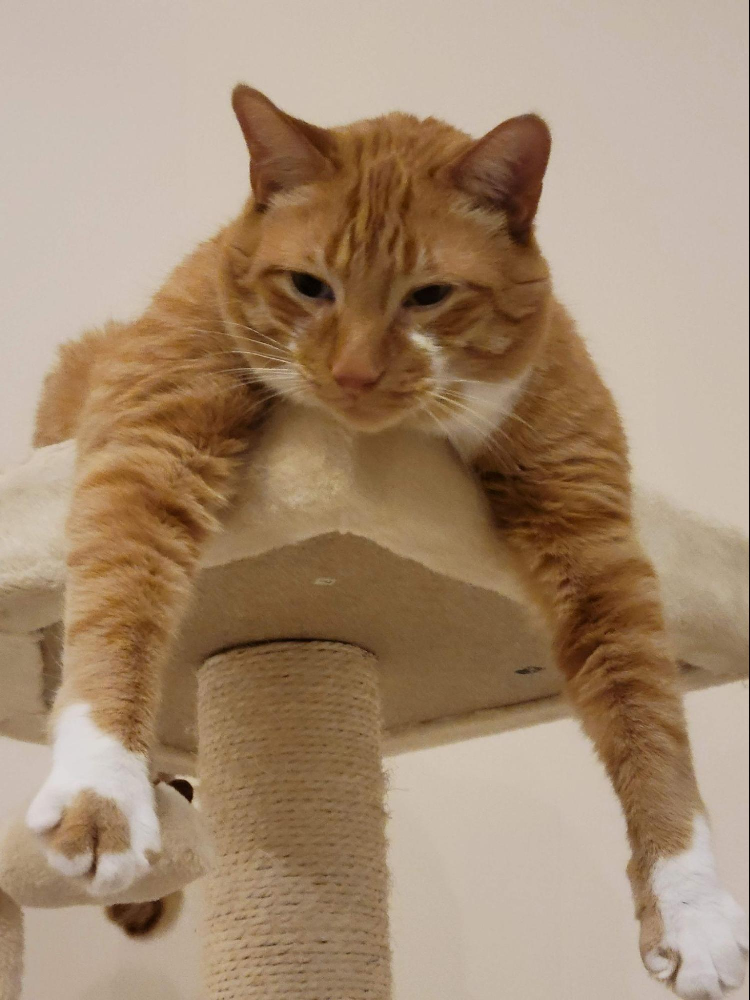

Check Out These Cuties
Main
Recipes
Pets
Travel
Milktea
Bacon
Jax

Cheeto

Mochi
Likes
She loves individual corn kernels served on human hands
She enjoys sitting royally on suitcases to claim ownership of her humans
She prefers to be alone and sit on soft surfaces in her free time